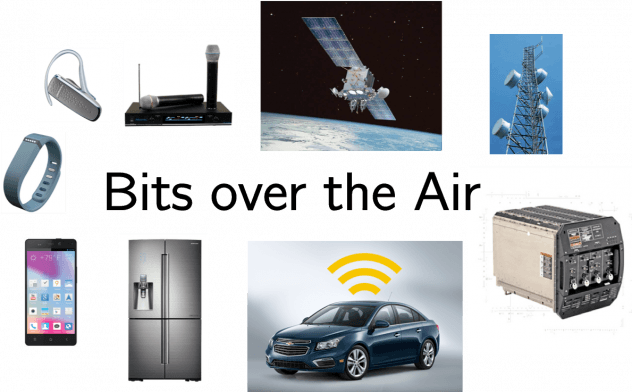

This week-long CATALYST design project will provide a unique hands-on-experience in wireless system design and expose the scholars to the broad range of fields covered by Electrical and Computer Engineering (ECE) with the goals of (i) learning how digital information (bits) is transmitted over the air and (ii) building a real-world wireless communication system.
With the acquired knowledge, scholars will then work in groups in order to build a robust wireless communication system that either maximizes the data rate or the communication range without errors and without causing interference to the other groups’ systems. In a final presentation, the groups will demonstrate the capabilities of their communication systems.